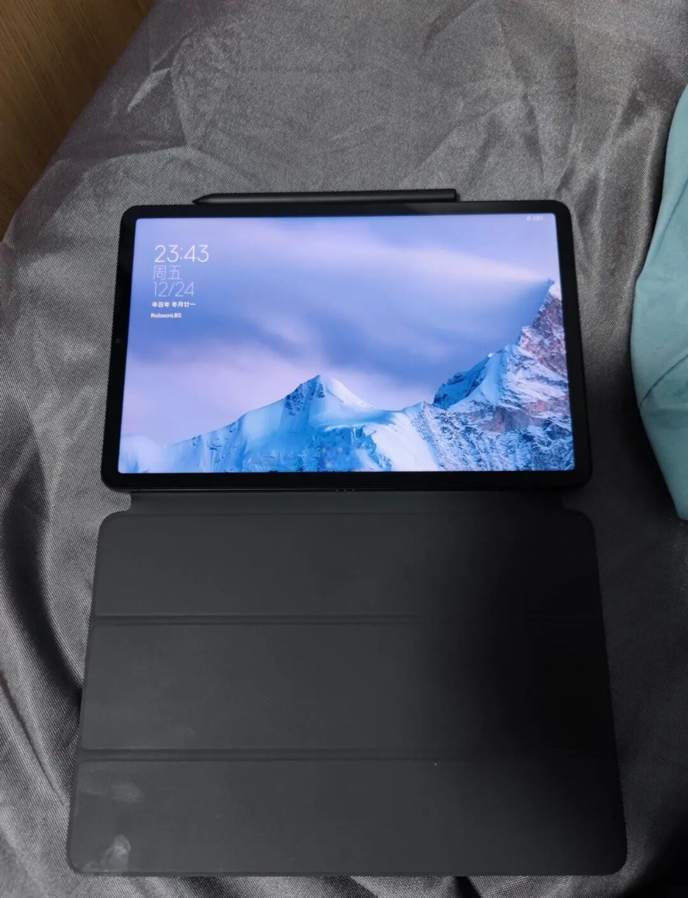

小米平板 5

2000 元档高刷旗舰芯平板，小米平板线的强势回归之作。
客观评测
小米平板 5 配备 11 英寸 2560×1600 LCD 屏，支持 120Hz 自适应刷新率，搭载骁龙 860 处理器与 6GB 内存，性能属同价位第一梯队。8720mAh 电池配 33W 快充，四扬声器支持杜比全景声。实测《原神》中高画质可稳定在 50 帧上下，金属中框与玻璃背板做工扎实，整机约 511 克、厚约 6.85 毫米，磁吸触控笔与键盘需另购。
主观点评
小米平板在沉寂多年后靠这一代强势回归，2000 元价位就把高刷屏、四声道和旗舰芯片凑齐，性价比打法一以贯之。MIUI Pad 的平行视界与桌面模式也终于补齐了安卓平板的应用适配短板，追剧与轻办公都顺手，让买前生产力、买后爱奇艺的说法多少有了转机。
优点与不足
- 骁龙 860 性能同价位领先
- 120Hz 高刷屏与四扬声器影音表现出色
- 33W 快充补能迅速
- 国内无 Google 服务，海外可用性一般
- 触控笔与键盘需另购
- 应用适配仍在持续完善中
参数规格
| 屏幕 | 11 英寸 LCD 触摸屏 |
|---|---|
| 分辨率 | 2560×1600，120Hz 自适应刷新率 |
| 处理器 | 高通骁龙 860 |
| 内存 | 6GB |
| 存储 | 128GB / 256GB |
| 系统 | MIUI 12.5 for Pad |
| 电池 | 8720mAh，支持 33W 快充 |
| 摄像头 | 后置 1300 万、前置 800 万像素 |
| 扬声器 | 四扬声器，支持杜比全景声 |
| 重量 | 约 511 克 |
| 厚度 | 约 6.85 毫米 |
| 配件 | 支持磁吸触控笔与键盘保护壳（另购） |